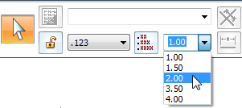

Make all dimension text larger
You can increase the text size of all of the dimensions on a drawing sheet at the same time using the SmartSelect command.
-
In the Draft environment, verify that the Select command
 is active, but that nothing is selected.
is active, but that nothing is selected. -
On the Select command bar, click SmartSelect.
-
Click any dimension on the sheet.
The SmartSelect Options dialog box opens, with the Element type check box already selected.
-
In the SmartSelect Options dialog box, click OK.
Observe the following:
-
All of the dimensions on the sheet are selected and highlighted.
-
The Select command bar now displays the editing options for dimensions.
-
-
On the command bar, from the Text Scale list, select a larger text size or type a value in the box.

This technique works for editing the text size or other properties of annotations. For example, if you selected a balloon or a callout or a datum frame instead of a dimension, then all of the annotations of the same type are selected for editing.